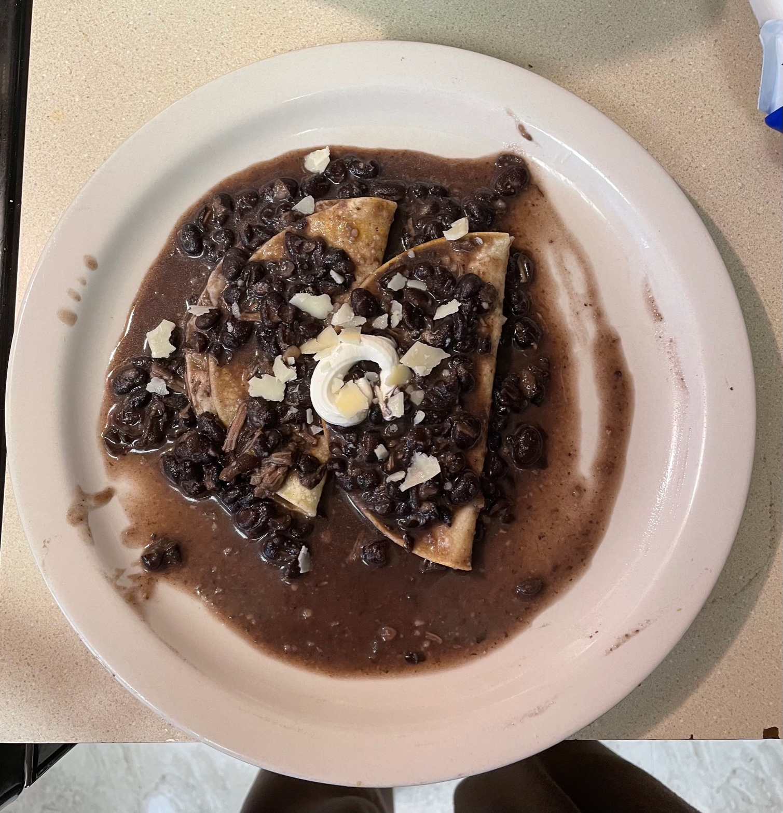

Heat a medium size pan to medium high heat, throw some oil in the pan with the onion. Cook onions until onion is translusent.
My husband just started making this and it is already one of my favorites. I hope you enjoy!
sort and soak beans overnight. Change out the water once, make sure to put an inch of water over the beans because the beans will absorb some of the water.
Heat a medium size pan to medium high heat, throw some oil in the pan with the onion. Cook onions until onion is translusent.
Rinse the beans and dump in the pan with the onions. Throw in finely chopped japlapenos, minced garlic, pepper, and salt. Fill with water over an inch from the beans. Leave pan on medium high heat.
Cook for 3 hours, check water to make sure they don't dry out. Refill water if needed. Once beans are soft enough to mash they are ready.
In the last 30 mins of the beans cooking pan fry the tortillas. Once beans are done throw in the tortillas, make sure to coat them evenly.
They are now ready to assemble, once tortillas are coated take them out and place them on a plate. Then put the toppings on top and enjoy!